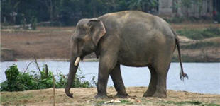

L'éléphant d'Asie, de la famille des pachydermes (animaux à peau épaisse) est plus petit que son cousin d'Afrique, et son dos est rond. Les éléphants d'Asie sont domestiqués depuis près de 5000 ans.
|  |
|
Où vit-il ? Il vit dans une vaste région de l'Asie méridionale habitant les forêts et les plaines herbeuses de la Chine, de l'Inde, du Sri Lanka, de la Birmanie, de la Thaïlande, de la Malaisie de Sumatra et du Nord de Bornéo, du Laos, Cambodge, Népal, Bangladesh et Vietnam.
Combien en reste-il aujourd'hui ? Il en reste environ 50 000. Plus de la moitié a été exterminée en un siècle.
Un état sauvage compromis : La déforestation et la fragmentation de l'habitat, le braconnage, la capture pour les zoos sont responsables de cette diminution. En Thaïlande, par exemple, les forêts naturelles n'occupent plus que 15% du pays contre 90% au début du XXème siècle. En Asie, les éléphants sont également utilisés somme bêtes de somme, et donc domestiqués dès leur plus jeune âge. Même s'ils sont parfois relâchés, ils sont dans ces conditions incapables de se défendre. Le trafic d'ivoire perdure, et le Japon est d'ailleurs montré du doigt car il en est grand consommateur.
A savoir : Les éléphants meurent souvent de faim à 50 ou 60 ans : leurs dents sont usées et ils ne peuvent plus avaler que des plantes des marais.